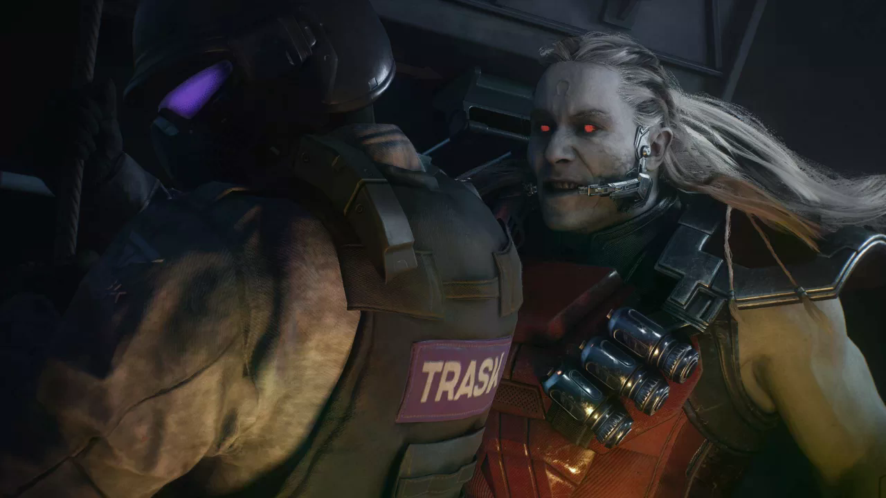
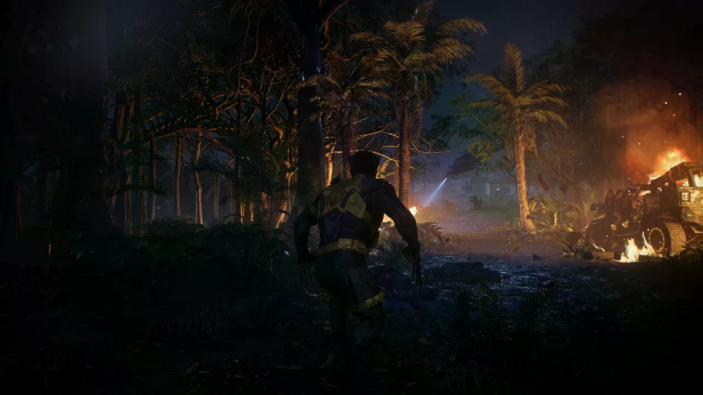
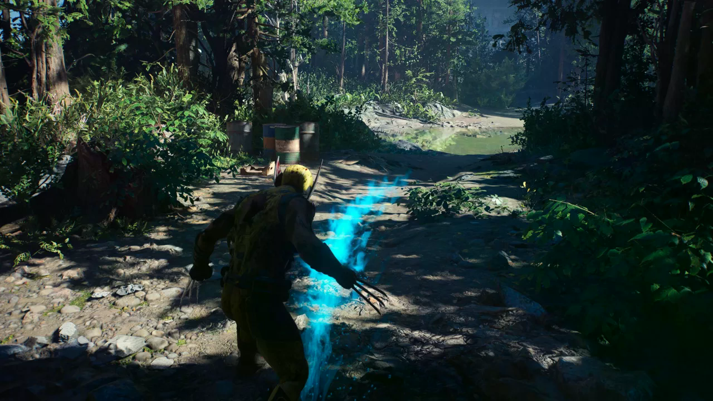
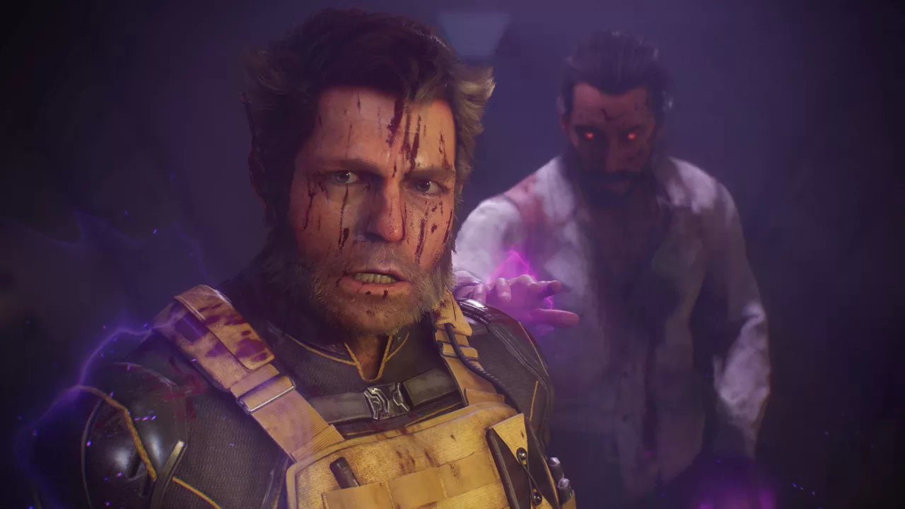
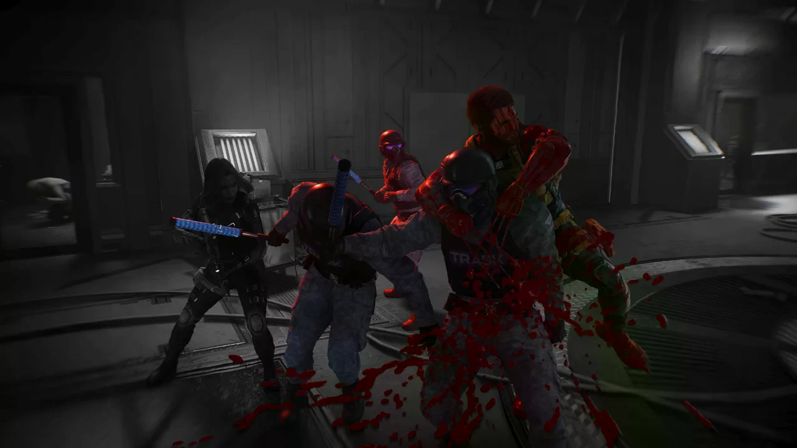

–Marvel's Wolverine, Logan’ın acımasız dövüş tarzını sinematik anlatımla birleştiriyor. Peki Insomniac’ın yeni oyunu, yüksek beklentileri karşılayabiliyor mu?
Marvel’s Wolverine ilk duyurulduğunda zaten Spider-Man oyunlarıyla çıtayı belli bir
seviyeye yükseltmiş ve kendisine güvenen bir topluluk oluşturmuş olan Insomniac
Games’den beklentilerimiz belliydi. İyi bir süper kahraman oyunu yapacak, ilginç bir
hikaye ve keyifli bir oynanış sunacak, kısaca PlayStation 5 almaya değer bir
exclusive ortaya koyacaktı. Tabi konu Wolverine olunca gereksiz stealth görevleri,
mırmır konuşan tipler ya da anlamsız tempo düşüren bölümler de olmayacağını
bekliyorduk. En sonunda kod elimize geçti, uyumak yerine 2 gecemi oyuna gömdüm ve
oyun çıkmadan incelemeyi sizlere yetiştirmeyi başardığımı umuyorum. Peki değdi mi?
Logan’ın hafızasını kaybettiği dönemde başlıyor oyunumuz. Canada’da tam bir orman
adamı gibi yaşarken Essex adında bir mutantın kendi türünden olanları topladığı Team
X isimli gruba dahil olduğunu görüyoruz. Aradan yıllar geçiyor ve gruptan ayrılmış
olan Logan kaçırılan Essex’i kurtarmak için tekrar ortaya çıkıyor. Amacımız Essex’i
kurtarmak ama bu sırada Bolivar Trask isimli bilim adamının ve eski takım
arkadaşımız Omega Red’in neler yaptığına şahit oluyoruz. Bu iş böyle devam etmez
diyen Logan yeni kostümünü alıyor, Sabertooth, Mystique, Jean Grey ve daha fazla
mutantı barındıran büyük bir mücadele başlıyor.

Şimdi yazarlar “orijinal bir hikaye yapalım, çizgi romandan farklı olsun ama bilindik karakterler koyalım” demişler ama bunu fan fiction tadında yapmayı tercih etmişler. Hiç çizgi roman bilmeyen biri bazı karakterlere bakıp “Aaa ne iyi adam bu, güzel yapmışlar” diyebilir ama o bile kısa süre içinde hikayenin gidişatını tahmin edebilir, o kadar tırt hikaye. Karakterleri kafalarına göre yeniden yazmışlar zaten, bu kadar alternatif bir Wolverine yapmaya ne gerek vardı? Çizgi roman bilenler ise zaten hikayeyi bir noktada bırakıp “ulan bunu da mı hiç ettiniz beee” diye her karaktere ayrı üzülecektir. Yalnız karakterlerin oyunculuklarını falan sevdim ben, ellerinde düzgün bir senaryo olsa güzel şeyler çıkarmış ortaya. Hikaye kötü, nerden tutsam nereye çeksem kötü. Sunum daha kötü. Marvel’s Spider-man’de az olan, 2. oyunda sayısını arttırdıkları ama çoğunu opsiyonel yaptıkları durağan sıkıcı sinematikmiş gibi ama gameplay diye yedirilen anlamsız yürüme kısımları çok fazla. Opsiyonel falan da değiller, baya kapıdan girip iki adım yürüyüp üçgene basıyoruz adamlar konuşmaya başlıyor ya da karakterler biraz konuşsun diye lüzumsuzca etrafı dolaşıyor ve normalde önümüzde duran ipucunu görmek için önce iki farklı ipucu bulmaya çalışıyoruz falan. Oyunun temposu zaten yerde, bölüm dizaynı "ağır ağır yürü, insanlarla konuş, paldır küldür milleti döv, hadi şimdi yine yürü" yapılmış.
"I'm the best there is at what I do, but what I do best isn't very nice."
Wolverine’in geçmişini öğrenme kısmı da benzer derecede kötü. Zihninin derinliklerine açılan hayal kapıları (yani öyle diyelim) var her bölümde. Bu kapılardan girince kulübemize gidiyoruz, orada kök salmış anılar var, bir teste girip başarılı olunca kökleri parçalıyoruz anılar açığa çıkıyor. Testler ise “3 tane sniper öldür” “100 metreyi 10 saniyede koş” “10 tane adam döv” “PARKUR!” gibi anlamsız şeyler ama ona gameplay kısmında değinelim. Neyse yapıyoruz sonra hatıralar açılıyor ve 1 sayfa seslendirilmiş yazı çıkıyor. MGS V’de bütün hikayeyi kasetlerden dinliyorduk ya neredeyse, bunda da aynısı ve üstüne sesli dinleyecekseniz o ekranda takılıp kalıyorsunuz. Infamous tarzında bi çizgi roman sayfası falan yapsaydınız bari, bu mu ödülüm? Sıkıldım ben “geçmişine de başlarım şimdi” diyerek hızlıca okuyup seslendirmeyi geçmeye başladım kısa sürede. !

Senaryoyu sevmedim, sunumu sevmedim, karakterleri işleyişlerini sevmedim, arka planda verilen lore bile beni tatmin etmedi. O zaman diyorum ki “bu zaten Wolverine, hikaye anlatmasını değil kesip biçmesini beklerim, bana şahane savaşlar sunup bunları unutulmaz boss dövüşleriyle pekiştirmişlerdir” değil mi? Değil mi? Ana karakterimiz ve oyun boyu yönettiğimiz Wolverine tam bir savaş makinesi, keskin pençeler, boyundan büyük bir öfke patlaması, oyun izin verdiği sürece ölümsüz ve yine oyunun izin verdiği her yere atlayıp zıplayabilen çevik bir bedene sahip. Oyun izin vermezse kapı önünde kutu var diye iki saat başka yere giden eski survival karakterleriyle aynı hareket kabiliyeti var, o kısım ayrı.
Savaş sistemi fikir olarak gayet iyi, pençelerimizle saldırıyor, düşman saldırılarını savuşturup karşılık veriyor, adam dövdükçe öfkeleniyor öfkelendikçe daha güzel adam dövüyoruz. Canımız azalırsa düşmanı döverek can tazeliyor, yetmezse yere düşüp bir sinirle tekrar ayağa kalkıyoruz. Yeterince sinirli değilsek shotgun mermisine ölüyoruz yalnız, az önce uçak savar mermilerini yakalayıp düşmana koşturan başka bir Wolverine. Burada “oyunlaştırma” kuralları gereği oyuncunun kaybetmesi gerektiğini bahane edebiliriz aslında, sonuçta ölümsüz bir karakter olsa film gibi olur. Ama oyun kendi kuralına QTE sekanslarında karşı çıkıyor. Ona da değineceğim. Dövüş aslında eğlenceli gibi gözüküyor, hatta rage moduna geçince bir havaya giriyorsunuz. Ama Wolverine sonuçta repertuvarı kısıtlı bir karakter, sal ortama herkesi pençelesin, ısırsın falan. O yüzden karakter geliştirmelerini biraz fazla dağıtmışlar ve normalde o yeteneklere sahip birinden bekleyeceğimiz performansı oyunun sonlarına doğru almaya başlayabiliyoruz. Özellikle pençelerimiz de 3 boyutlu yazıcıdan çıkmış gibi başlıyor, düşmana pençe atıyorum bana ateş etmeye devam ediyor falan, tekmeyle sarsmam gerekiyor.

Wolverine çeşitli kombolar yapabiliyor, saldırı tuşlarına basarak hareketleri birleştirebiliyorsunuz, uzaktaki düşmana üçgen tuşuyla atlayabiliyorsunuz, kareyle tekme tokat girişiyorsunuz falan. Ama düşman çeşitliliği pek fazla değil, olan düşmanlar da “bak aynısının ninja kıyafetli versiyonu” gibi hisler oluşturuyor insanda. Ha düşmanı kesmek keyifli olursa bunları görmezden gelebilirsiniz. Bir süreliğine gerçekten işe yarıyor. Ayrıca bazı yetenekler de açıyoruz ilerledikçe, bu yetenekler ile dövüş daha da çeşitleniyor. Ama yine aklıma takılan bir şey var, mesela ben neden sersemlemiş düşmanı kaldırıp düşmana atmak için çokça seviye atlıyorum? Zaten tek atan saldırım var sersemleyen düşmana, niye fırlatıp atayım? Bir de etrafta viski şişesi toplayıp mutasyonlarımızı açabiliyoruz, o konuya çok girmek istemiyorum. Daha düzgün parry atmak için boş viski şişesi bulmak baya kötü bir fikir. Bu arada dövüş için serbest stil uygulamışlar, ayarlardan açmadığınız sürece düşmana kilitlenemiyorsunuz, Batman tarzı akıcı bir otomatik düşmana yönelme de yok. Bazen düşmana dönesi tutuyor, bazen havayı dövüyorsunuz. İşin kötüsü ise yeteneklerimizi baskılayan zımbırtıları kırmaya çalışırken karakterin inatla benim çevirdiğim yöne değil düşmana dönmeye çalışması oluyor.

Şimdi ara dövüşler bir yere kadar eğlenceli ama tekrara bağlayıp kısa sürede tekdüze hale geliyor dedik. Buna benzer bir şikayet geçtiğimiz haftalarda oynadığım Onimusha: The Way of Sword için de gelmişti. Ben pek katılmasam bile bazı oyuncular böyle düşünüyordu ama herkesin hemfikir olduğu bir konu vardı ki o da boss dövüşlerinin neredeyse her birinin eşsiz ve şahane olduğu. Ben aynısını Wolverine’den de bekledim. Sonuçta Marvel evreni ve Wolverine için konulabilecek bir sürü güzel karakter mevcut. Tanıtımında gösterdikleri Sentinel savaşını “bir aşamadır, daha iyi oluyordur” diye görmezden geldim. Çok yanılmışım, Oyunun boss dövüşleri standart düşmanlardan hallice, hatta bazı bosslar bir süre sonra standart düşman olarak geliyorlar, o kadar uğraşılmamış. Daha ilk düşmanımız Omega Red oluyor, taktik ustası, büyük savaşçı, güç emiyor falan hani. Bütün boss dövüşü yaptığı bloklanamaz saldırılardan kaçıp parry atabildiğimizde atarak staminasını düşürmek üzerine. Vurabiliyoruz ama etkisi yok, farklı aşamaları var ama yine “kaç kaç savuştur vur” oluyor. “Ya nasıl yapacaklardı?” diye soranlar olursa elimizde daha dumanı üstünde Onimusha var, hadi daha farklı olsun dediniz madem QTE tabanlı olacak Asura’s Wrath gibi yapın. Neredeyse hiçbir dövüşte o Marvel karakterinin epik savaşları hissini alamadım ben bosslardan.



Yorum Yap